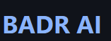

⌁
Sin Wi-Fi
Una vez instalado el modelo y sus componentes, la versión local está diseñada para responder sin Internet.

TDR · Local AIUna inteligencia artificial práctica, privada y diseñada para funcionar localmente, sin depender del Wi-Fi ni de servidores en Internet.
Tus datos en tu dispositivo.
BADR AI es un proyecto de investigación que explora cómo crear un asistente conversacional que se ejecute en el propio dispositivo. El objetivo es ofrecer una herramienta práctica, accesible y capaz de funcionar sin conexión a Internet.
Una vez instalado el modelo y sus componentes, la versión local está diseñada para responder sin Internet.
Las preguntas pueden procesarse en el propio dispositivo sin enviarlas a servidores remotos.
El proyecto contempla una aplicación para Android y una versión portable para Windows.
BADR AI apuesta por la ejecución local: las consultas no necesitan viajar a servidores remotos, lo que puede reducir la dependencia de servicios en la nube.
Transparencia: no sería correcto afirmar que la huella ambiental total es cero. El dispositivo consume electricidad y fabricar hardware también tiene impacto. El consumo real depende del equipo y del modelo.
Próximamente en la web estarán disponibles los enlaces de descarga
Versión móvil con el modelo ejecutándose directamente en el teléfono.
Descarga Android próximamenteVersión pensada para ejecutarse desde una carpeta o memoria USB, según los requisitos finales.
ya disponible para windowsProyecto desarrollado por Badredin en el marco de su Treball de Recerca (TDR), con la colaboración del Institut EMT.
La mención de colaboración debe corresponder al acuerdo y al papel real de cada parte.